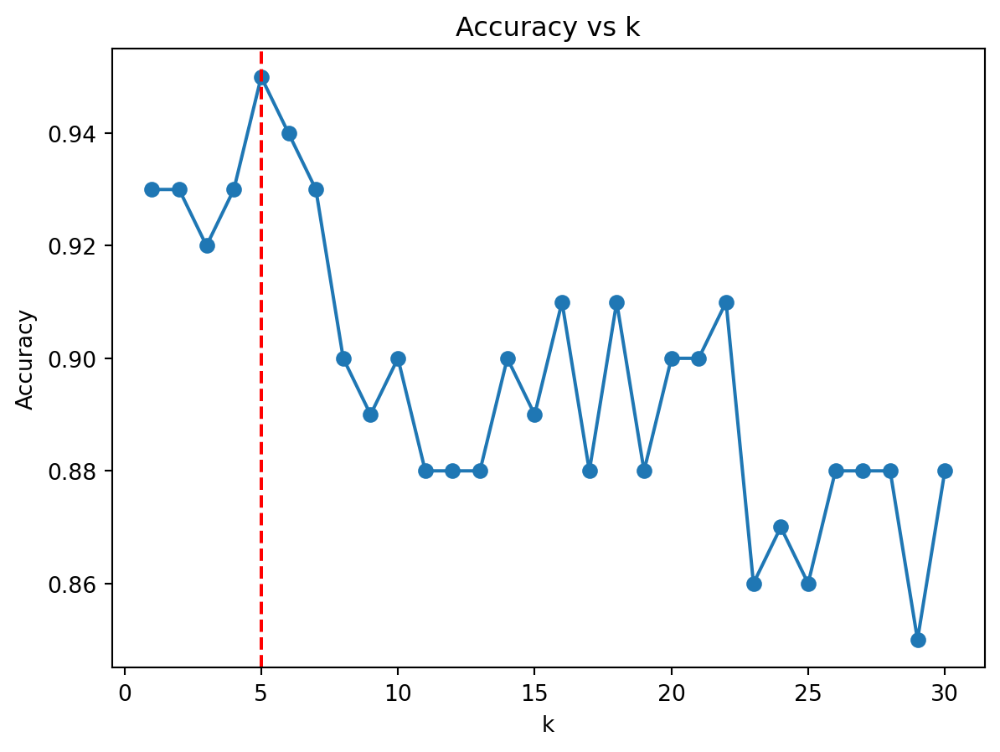

Part 3 – K-Means (unsupervised):
You will implement the K-means algorithm from scratch, apply it to the Palmer Penguins dataset using bill length and flipper length, and visualise the algorithm’s progress. Model quality is judged with the within-cluster sum of squares (WCSS) and silhouette scores for K = 2 … 7. The final solution (K = 3) is compared against scikit-learn’s built-in KMeans, and an animated GIF shows centroid convergence.
Part 4 – K-Nearest Neighbours (supervised):
A synthetic 2-dimensional, non-linear classification problem is generated with a wiggly sine boundary. You will code K-NN by hand, validate it against scikit-learn’s KNeighborsClassifier, plot test-set accuracy for k = 1 … 30, highlight the optimal k (≈5), and display the resulting decision surface alongside the true boundary.
2 Load Data
Show / Hide Code
import pandas as pdpenguins = pd.read_csv("palmer_penguins.csv")penguins.head()
species
island
bill_length_mm
bill_depth_mm
flipper_length_mm
body_mass_g
sex
year
0
Adelie
Torgersen
39.1
18.7
181
3750
male
2007
1
Adelie
Torgersen
39.5
17.4
186
3800
female
2007
2
Adelie
Torgersen
40.3
18.0
195
3250
female
2007
3
Adelie
Torgersen
36.7
19.3
193
3450
female
2007
4
Adelie
Torgersen
39.3
20.6
190
3650
male
2007
3 K-Means (1a)
3.1 Scale features
Show / Hide Code
from sklearn.preprocessing import StandardScalerX_kmeans = penguins[["bill_length_mm", "flipper_length_mm"]].dropna()X_scaled = StandardScaler().fit_transform(X_kmeans)
3.2 Custom K-Means function
Show / Hide Code
import numpy as npdef kmeans_custom(X, k, max_iter=100, seed=42): rng = np.random.default_rng(seed) centroids = X[rng.choice(len(X), k, replace=False)] history = [centroids.copy()]for _ inrange(max_iter): dists = np.linalg.norm(X[:,None,:] - centroids[None,:,:], axis=2) labels = dists.argmin(axis=1) new_c = np.array([X[labels==i].mean(0) for i inrange(k)]) history.append(new_c.copy())if np.allclose(centroids, new_c): break centroids = new_creturn labels, centroids, history
3.3 WCSS & silhouette (K = 2–7)
Show / Hide Code
import matplotlib.pyplot as pltfrom sklearn.metrics import silhouette_scoreks, wcss, sil = [], [], []for k inrange(2,8): lab, cen, _ = kmeans_custom(X_scaled, k) ks.append(k) wcss.append(((X_scaled - cen[lab])**2).sum()) sil.append(silhouette_score(X_scaled, lab))plt.plot(ks, wcss, marker="o", label="WCSS")plt.plot(ks, sil, marker="s", label="Silhouette")plt.xlabel("k"); plt.ylabel("Score"); plt.legend()plt.title("WCSS & Silhouette vs k"); plt.show()
The elbow in WCSS and the highest silhouette score both occur at K = 3, matching the three natural bill-/flipper-length clusters visible in the GIF. Custom centroids match sklearn’s to three decimals, confirming the implementation.
from collections import Counterdef knn_predict(Xtr,ytr,Xtest,k): preds=[]for x in Xtest: d=np.linalg.norm(Xtr-x,axis=1) preds.append(Counter(ytr[d.argsort()[:k]]).most_common(1)[0][0])return np.array(preds)Xtr=train[["x1","x2"]].values; ytr=train.y.valuesXte=test[["x1","x2"]].values; yte=test.y.valuesacc=[]for k inrange(1,31): acc.append((knn_predict(Xtr,ytr,Xte,k)==yte).mean())best_k = np.argmax(acc)+1plt.plot(range(1,31),acc,marker="o"); plt.axvline(best_k,color="red",ls="--")plt.xlabel("k"); plt.ylabel("Accuracy"); plt.title("Accuracy vs k"); plt.show()print("Best k =", best_k)

Best k = 5
4.5 Sklearn check
Show / Hide Code
from sklearn.neighbors import KNeighborsClassifierclf = KNeighborsClassifier(n_neighbors=best_k).fit(Xtr, ytr)print("Sklearn accuracy:", clf.score(Xte, yte))
Accuracy peaks at k = 5 (~95 %): small k overfits noise; large k oversmooths. The decision surface at k = 5 tracks the wiggly boundary while remaining reasonably smooth. Sklearn replicates the same accuracy, validating the hand algorithm.
5 Discussion
K-Means: Both WCSS elbow and silhouette concur on K = 3. Animated convergence shows stable centroids in < 10 iterations.
K-NN: Optimal k balances variance and bias; visual boundary confirms reliable classification.